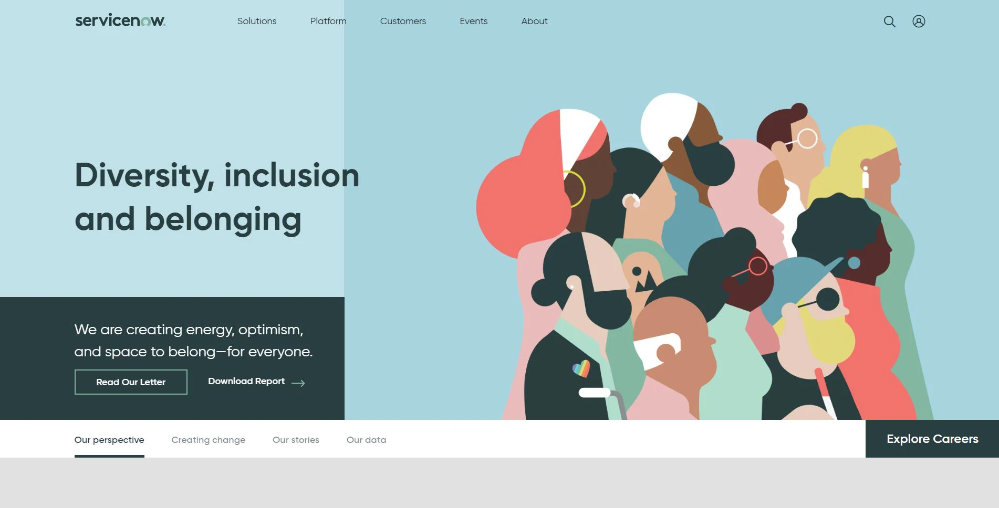
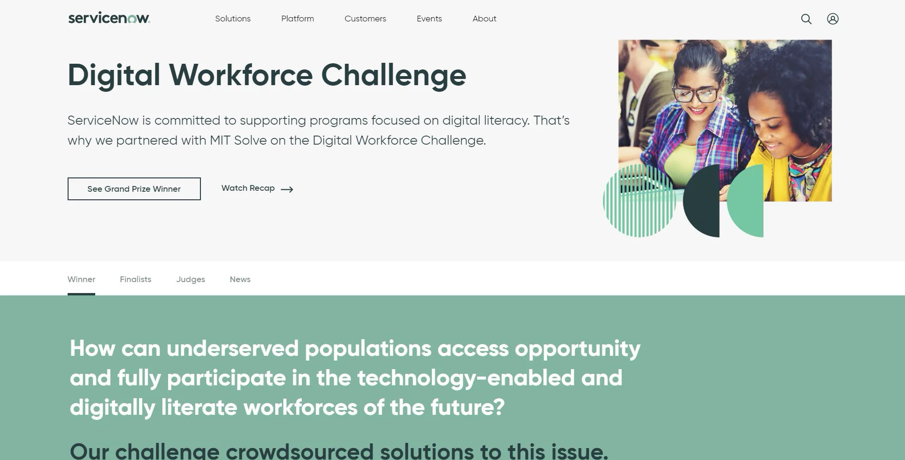

ServiceNow
UX research, content strategy, research ops
During my full-time internship with ServiceNow's Digital Design team, I worked on several content strategy and UX research projects for the company website, ServiceNow.com. Here are some highlights.
Homepage redesign
Working with UX designers, brand designers, and my mentor Preston Brown, I conducted UX research for a series of exciting new designs for the homepage.
Preston and I designed a research study to assess the designs and then we individually interviewed real users over Zoom using UserTesting’s new moderated feature. We created highlight reels of user interviews and made design recommendations.
Diversity, Inclusion, and Belonging (DIBs)
With my mentor Julie Wildhaber, I worked on content strategy to update the Diversity, Inclusion, and Belonging page for 2020. We presented the company’s third annual Diversity Report and added new content, including videos and interviews of real employees, as part of a larger brand campaign.
I also conducted UX research to understand public perceptions of company values and assess the page’s impact on user engagement and interest in ServiceNow.
{kind=link}
Visit the live page.
Global Impact
I led content strategy for ServiceNow’s first Global Impact initiative presented on the company website.
The Digital Workforce Challenge, co-hosted by MIT Solve, is a worldwide competition promoting innovative solutions for digital literacy. Collaborating with ServiceNow’s Global Impact team, I designed the page with multimedia content and strategized a phased launch according to competition timeline.
{kind=link}
Visit the live page.
UX research program
I worked with Preston to establish the first UX research program for the team.
I evaluated UX research tools, including Airtable for storing research findings, UserTesting's new moderated testing feature, and UserZoom. I also created documentation templates for study outlines, reports, and presentations, and guides for usability testing and conducting moderated user interviews.
Reflection
I met my internship goals around personal and professional development, and in leaving some impact. This was my first time working in content strategy and formal UX research; I gained most of my technical skills and knowledge of these fields on the job. This was also my first time working in corporate UX, at a mid- to large-sized company. Unlike at previous design environments I've known, UX roles were split on the ServiceNow Digital Design team with many different professionals specializing in UX research, strategy, or design. This experience opened my eyes to exploring a UX specialization instead of pursuing a career as a UX design generalist.
I presented this at the end of my internship, to the entire Marketing Department (which includes the Digital Design team).
Mentors
A huge thank you to my mentors, Julie Wildhaber and Preston Brown, as well as the Digital Design team!